Happy Hare Wiki
Page Sections:
- How to get help
- Organization
- Common Terms and Abbreviations
- Happy Hare General Questions
- Setup and Installation Pages
Documentation and walkthrough MMU setup
This wiki serves to provide a logical set of instructions and FAQs to help you delve into the wonderful world of MMU (Multi Material Unit) printing controlled by the extensive software suite Happy Hare. Note that the term "MMU" is fairly common and understood in the community but the Amored rutle folks would call it an AFC (Automated Filament Changer). I prefer MMU and although it is also the name of the Prusa product, it is used generically in this wiki to cover all types of changer.


 How to get help
How to get help
Look at the troubleshooting page first
There are a few recurring problems with simple solutions and we've tried our best to compile them here:
Happy Hare Troubleshooting Guide
Discord
Also you should join the dedicated Happy Hare discord where there are dedicated channels for each MMU type as well as some of the main extensions.
ERCF users can speak up on the Voron ERCF Discord channel. There is a lot going on there, so be patient and persistent. Don't give up and someone will certainly help you. Similarly Tradrack users can use the TradRack General Discord.
When you ask for help you should be prepared to provide the following information:
- klippy.log
- mmu.log
- version information (copy output from MMU_STATUS SHOWCONFIG=1)
- specific error text (copy and paste out of Mainsail would work)
- a detailed description of what has occurred
- details about what was happening when the error occurred
- detailed pictures of the issue if it is physical in nature
Also, be respectful. The team works diligently to advance the hardware and software. Direct messaging them is frowned upon and you'll not be moved to the front of the queue by doing so.
Tip
The easiest way to get logs is to download them through Mainsail. Click the "Machine" tab, then in the dropdown at the top, select "logs". Then look for the chosen log file and RIGHT click and select download.
Alternatively you can use the Github Issue system although I only tend to look at that on a weekly cadence.
Organization
The Wiki is organized to be as organic in nature as possible. The goal is to help you go step by step from having the MMU hardware built to a fully functioning setup. Since Happy Hare is intended to work for multiple MMUs, please consult the respective resources for hardware sourcing, building, and printed parts requirements.
Supported MMU types:
-
Type A (Linear_Selector, Shared drive stepper):
- ERCF v1.1, v2.0
- Tradrack v1.0
-
Type B (Virtual_Selector, Individual drive steppers):
- Box Turtle v1.0
- Night Owl v1.0
- Angry Beaver v1.0
- 3MS v1.0
- Quattro Box
-
Type A (Rotary_Selector, Shared drive stepper):
- 3D Chameleon (with Rotary_Selector)
-
Type A (Servo_Selector, Shared drive stepper):
- PicoMMU (with Servo_Selector)
-
Generic/Custom
General overview of the configuration and setup process

On the right of the page is an index of pages for each step in the process. Navigate to them for a breakout description of the step and instructions to accomplish each step.
Common Terms and Abbreviations
This is just a list of some common terms that are thrown around the 3D printing community and by Linux geeks. Now, you'll kinda know what they're talking about!
- rpi: Just a short name for Raspberry Pi, which is a single board computer which runs Klipper.
- ssh: This stands for "Secure Shell". It's a remote terminal, or a way to access one computer remotely. Basically, using PuTTY or even Windows Power Shell, you can log into the rpi computer and run it as if you were actually plugged in with a keyboard and monitor.
- git: Git is a version control system which helps track changes between computers. For us in the 3D printing community, this means we can keep our local files up to date with the latest files released. Git seems difficult at first, but it makes things so much easier in the long run.
- GitHub: GitHub is a development platform which allows users to store, manage revisions, and collaborate. It uses git software and has a web interface.
- alphabetized list: A device which puts different items in a list which is logical for humans to understand. This isn't one of those.
- bash: Bash is a Linux shell which handles user inputs and translates them from one confusing language (Linux commands) to another far more confusing language (computer machine code). If you want to see which shell you're using, just type
echo $0at the prompt, and it will likely returnbash. - bash script: A file containing a bunch of "scripted" commands, which the shell executes in order.
Happy Hare General Operation
First, let's take a moment to understand what Happy Hare is and gain a basic understanding of how it works.
Happy Hare software is modular in nature and works as a "State Machine" in that it manages the state of the MMU and the transitions between states. This means that most parameters can be changed during runtime, or if you will, while in operation.
If you're not a software and automation expert, you can think of Happy Hare as a browser plugin and Klipper as the browser. Just like Chrome, Edge, et. al. functionality can be expanded with plugins, Happy Hare expands the functionality of Klipper. In the same way that an ad blocker doesn't change how the browser works internally, but filters out annoyances buy changing the state of the data the browser uses, Happy Hare works with Klipper to change the state of the ERCF hardware. That's the basic idea of how Happy Hare works.
Setup and Installation Pages
These are links to the setup and installation pages. They're broken out into individual pages because this one would be longer than a linear algebra lecture otherwise. So, grab a cup of coffee and work your way down the list.
Software installation
Happy Hare Software Installation
Configuration Files Setup
Here, we'll walk through the configuration files and how the settings affect the performance of the ERCF.
It's worthwhile to note that there are only a few configuration files that are user editable. You'll notice a whole bunch more files that aren't user editable. The only files we need to worry about are:
These files contain all the user editable parameters for the basic MMU setup. Other folders have things for additional addon functionality like the Blobifier, EREC, etc. They'll be part of a different section.